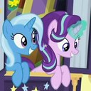

Converter para áudio
Magia de Trixie Lulamoon ✦

NekoTube✦ Site de fãs de My Little Pony ✦
Converta suas mídias, extraia suas músicas e tenha seus vídeos disponíveis em poucos instantes.
Magia de Trixie Lulamoon ✦
Magia de Starlight Glimmer ✦
Os arquivos ficam disponíveis para novo download por tempo limitado e depois são apagados automaticamente do servidor.
O NekoTube é uma ferramenta para converter mídias que você tem o direito de usar: seus próprios vídeos, músicas autorais, conteúdos com licença livre ou arquivos que você foi autorizado a processar.
Para links do YouTube, exibimos apenas a prévia pública. Não contornamos DRM, restrições de acesso ou proteções de nenhuma plataforma, e respeitamos os Termos de Serviço e os direitos autorais dos criadores.
Projeto de fãs, sem qualquer associação oficial com a Hasbro. My Little Pony e seus personagens pertencem aos respectivos detentores.